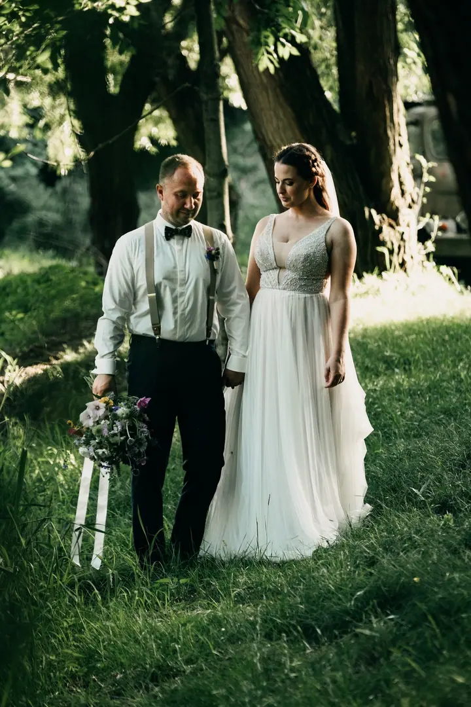
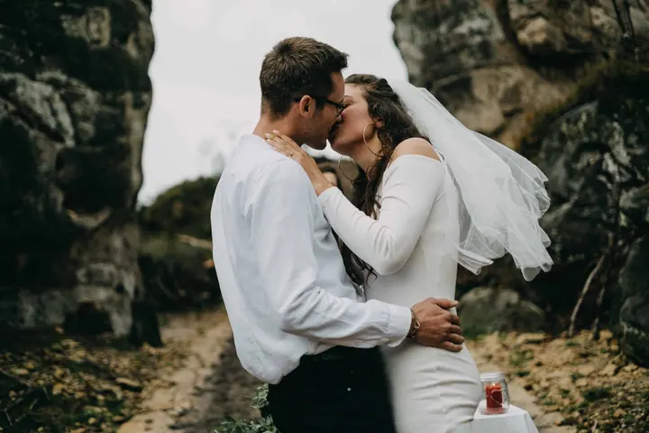
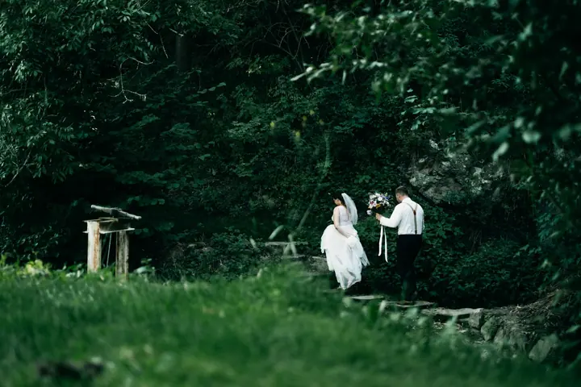

Svatby
Mix momentek, portrétů, zamilovaných pohledů a hromady radosti. Svatby neškatulkuji do balíčků, každou naceňuji podle vašich přání, velikosti a délky dne.

Jmenuji se Petra Šebestová a svatební fotky jsou moje srdcovka. Na svatbě se schovávám za foťák a jen příležitostně vykukuju, abyste si den mohli v klidu užít. Kromě sva…
Rezervovat termínJsem z Plzně, ale dojedu kamkoli. Svatby fotím tam, kde si mě vyžádáte, rodinná a newborn focení hlavně v Plzni a okolí, čas od času i kolem Mariánských Lázní nebo Písku.


Svatební den je super zážitek. Vaším úkolem je si ho maximálně užít a mým zachytit vaše nadšení a lásku. Proto se s vámi předem potkám, doladíme detaily a domluvím se i se svědky nebo koordinátory, abych věděla o všem, co se bude dít.
Ateliér nemám a nechybí mi. Rodiny i miminka fotím venku nebo u vás doma, protože fotky tak působí přirozeněji. Fotím na dva foťáky, takže můžu střídat objektivy bez zbytečných prodlev a nic důležitého mi neuteče.
Co fotím
Mix momentek, portrétů, zamilovaných pohledů a hromady radosti. Svatby neškatulkuji do balíčků, každou naceňuji podle vašich přání, velikosti a délky dne.
Na strojené fotky mě neužije, radši zachytím blbnutí s dětmi venku v přírodě nebo u vás doma. Místo vybírám podle sezóny, klidně ale i to vaše oblíbené.
Miminka fotím nejraději v prvních 14 dnech, u vás doma a s rekvizitami, které přivezu. Zůstanu, jak dlouho bude potřeba.
Postup
Zavoláme si nebo si napíšeme. Prozraďte mi, jak velkou svatbu plánujete, kolik lidí a míst a jak dlouho, a já vám řeknu, jak se budeme pohybovat s cenou.
Nejlépe se potkáme přímo na místě svatby, vybereme hezké lokace a cvakneme pár momentek. Na konci podepíšeme smlouvu, kterou dostanete předem k pročtení.
Den uteče rychleji, než si myslíte. Jsem domluvená s vámi i se svědky nebo koordinátory, takže jsem připravená i na případná překvapení.
Hotové fotky vám přistanou do mailu nejpozději do 30 pracovních dní od svatby. Do tisku je posílám až po vašem schválení.
Otázky
Svatby neškatulkuji do balíčků. Cenu stanovím individuálně podle vašich přání, délky a velikosti svatby, případně zájmu o fotoknihu.
Rodinné focení stojí 3 800 Kč včetně tisku 15 upravených fotografií, které si vyberete. Newborn focení stojí 4 800 Kč a obsahuje 10 upravených fotografií a tisk.
Svatební fotky odevzdávám nejpozději do 30 pracovních dní, rodinné a newborn do 14 dnů v digitální podobě. Do tisku je posílám po předchozí domluvě.
Nemám. Rodiny i miminka fotím venku nebo u vás doma. Venku mají děti hodně podnětů a fotky působí přirozeněji.